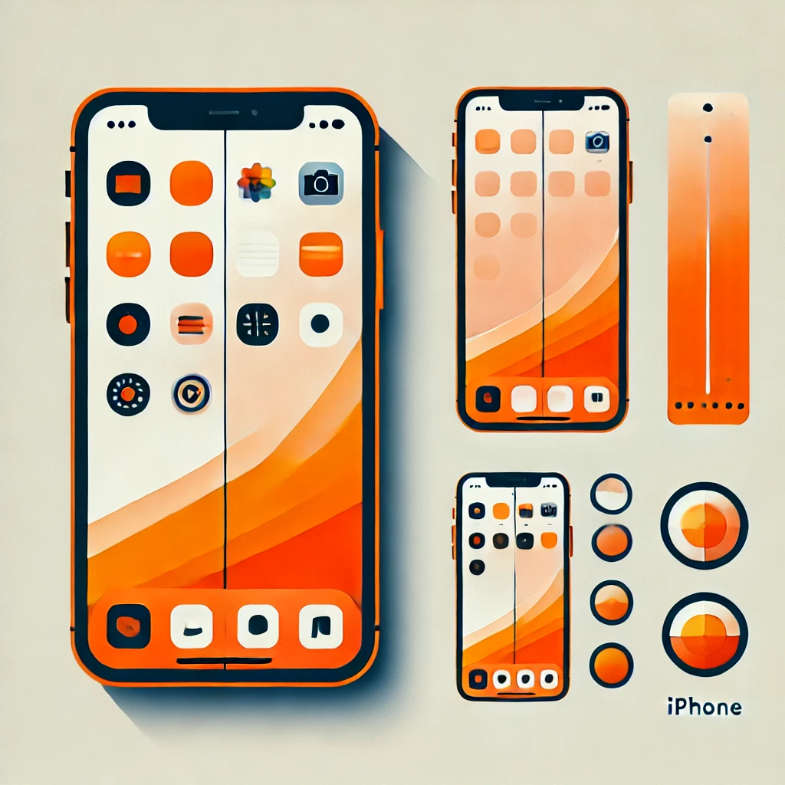

A full stack integrated testing platform for running browser tests on iOS simulators, at scale.
Create a fleet of on-demand, dedicated iOS simulators and run automated tests to ensure quality
in your deployments

About
What is Browser Mobility? How can you leverage it to increase quality in your deployments?
Learn About Us Here
Get Started
Learn how to get up and running in your CI/CD pipeline quickly with our Quick Start guide
Quick Start
Docs
Read the docs to learn how the system works and how you can set up your fleet of iOS simulator
devices to test your systems
Read the Docs
API
Dive into the API swagger docs to understand how you can control your fleet using modern REST APIs
Discover the APIs
How-To
Learn how to leverage the Browser Mobility APIs to customize your fleet to your scpecific quality
assurance needs
Learn How To